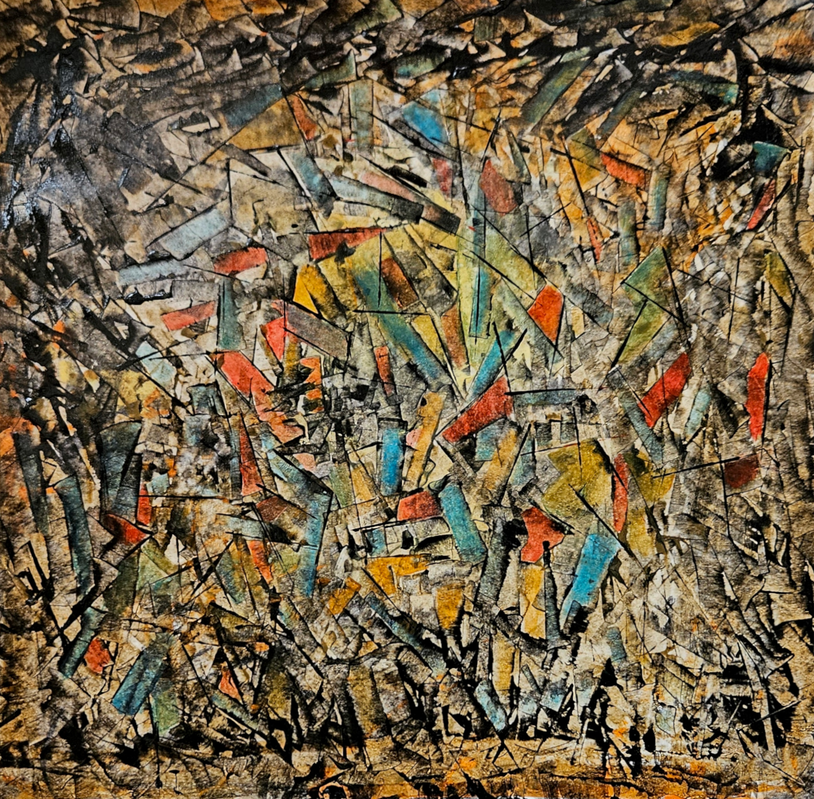
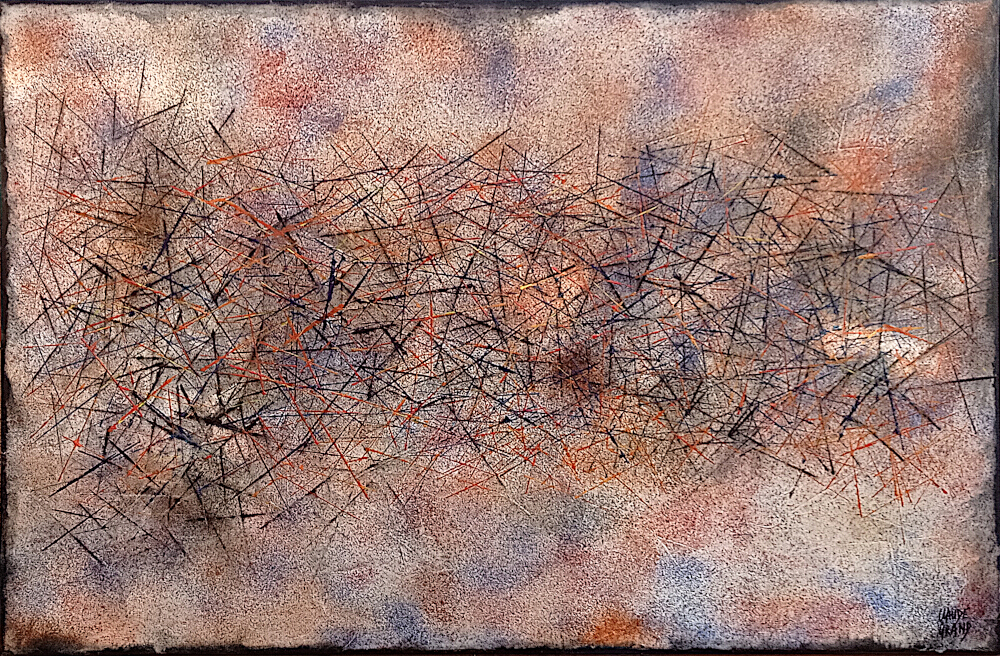

Bleu Magnétique
Technique : Acrylique sur toile
Dimensions : 80 x 120 cm
Année : 2020
Au cœur du bleu, palpite une force invisible

Magnétique Bleu Orange
Technique : Acrylique sur toile
Dimensions : 80 x 120 cm
Année : 2020
Une pluie de lumière embrase le silence bleu

Origine
Technique : Acrylique sur toile
Dimensions : 80 x 80 cm
Année : 2025
Une matière première traverse le silence, comme si la couleur retrouvait sa source.

Pulsar
Technique : Acrylique sur papier
Dimensions : 80 x 80 cm
Année : 2025
Un cœur lumineux pris dans un entrelacs d'énergies et de trajectoires
{kind=link}

Fragments d'Etoiles
Technique : Acrylique sur papier
Dimensions : 80 x 80 cm
Année : 2025
Morceaux de monde assemblés dans un même souffle.
{kind=link}

Sable
Technique : Acrylique sur toile
Dimensions : 80 x 120 cm
Année : 2020
Mille chemins se croisent là où le silence tisse ses liens

Tumulte
Technique : Acrylique sur papier
Dimensions : 80 x 80 cm
Année : 2025
Du désordre naît une harmonie insoupçonnée